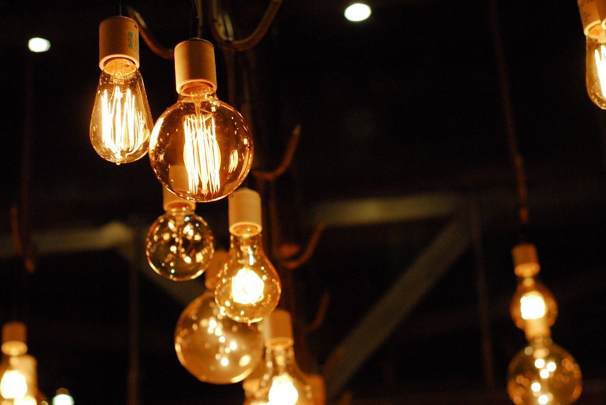

Portefeuille de projets
Des chantiers concrets,
Des chantiers concrets,
territoire par territoire
Extension de réseaux, centrales solaires, mini-réseaux hybrides, micro-centrales hydroélectriques et éclairage public : l'ANSER structure et accompagne des projets d'électrification dans l'ensemble des provinces de la République Démocratique du Congo.
Réalisations et chantiers
Explorez nos projets par technologie
Chaque projet répond à un diagnostic local précis : densité de population, ressource énergétique disponible, capacité de paiement des usagers et potentiel d'usages productifs.
Achevé
Kinshasa — N'Djili Brasserie
Électrification du quartier N'Djili Brasserie
Extension du réseau de distribution basse et moyenne tension au profit d'un quartier périurbain densément peuplé, avec pose de cabines de transformation et raccordement des ménages.
En cours
Kasaï — Kamonia
Micro-centrale hydroélectrique de Kamonia
Valorisation d'une chute d'eau locale pour alimenter la cité de Kamonia, ses centres de santé, ses écoles et ses activités artisanales à un coût durablement compétitif.
En cours
Kasaï-Oriental — Miabi
Centrale solaire photovoltaïque de Miabi
Production solaire couplée à un stockage par batteries et à un réseau de distribution local, conçue pour desservir le centre administratif du territoire ainsi que les activités commerciales riveraines.
En cours
Nord-Kivu — Walikale
Mini-réseau hybride de Walikale
Solution hybride associant production solaire, stockage et appoint thermique, afin de garantir une fourniture continue dans une zone enclavée où la demande industrielle est croissante.
À l'étude
Sud-Kivu — Kalehe
Aménagement hydroélectrique de Kalehe
Études techniques et environnementales en vue de l'aménagement d'un site hydroélectrique destiné à alimenter plusieurs agglomérations riveraines du lac Kivu.
Achevé
Kongo-Central — Mbata-Kiela
Raccordement de la cité de Mbata-Kiela
Raccordement d'une cité rurale au réseau régional, accompagné de la construction d'une ligne moyenne tension et d'un réseau de distribution interne aux quartiers.
En cours
Sud-Kivu — Luvungi et Katogota
Électrification solaire de Luvungi et Katogota
Déploiement de capacités solaires décentralisées dans la plaine de la Ruzizi, au bénéfice des structures de santé, des établissements scolaires et des unités de transformation agricole.
En cours
Plusieurs provinces
Programme national d'éclairage public solaire
Installation de lampadaires solaires autonomes sur les axes structurants, les marchés et les places publiques, pour renforcer la sécurité et prolonger l'activité économique après la tombée du jour.
À l'étude
Territoires enclavés
Mini-réseaux de nouvelle génération
Programme de standardisation de mini-réseaux réplicables, associant comptage intelligent, paiement mobile et maintenance mutualisée, afin d'accélérer le déploiement à grande échelle.
Méthode de travail
Le cycle de vie d'un projet d'électrification
Identification et diagnostic
Recensement des localités, évaluation de la demande, analyse des ressources énergétiques locales et hiérarchisation des priorités en concertation avec les autorités provinciales.
Études techniques et environnementales
Études de faisabilité, dimensionnement des ouvrages, évaluation des impacts environnementaux et sociaux, puis élaboration du modèle économique du projet.
Structuration financière et contractuelle
Mobilisation des financements publics, concessionnels et privés, mise en concurrence des opérateurs et sécurisation du cadre contractuel d'exploitation.
Exécution et contrôle des travaux
Supervision technique des chantiers, contrôle de la conformité des ouvrages aux normes en vigueur et vérification des jalons avant tout décaissement.
Exploitation et pérennisation
Transfert de compétences aux opérateurs locaux, suivi de la qualité de service, accompagnement des usages productifs et évaluation de l'impact socio-économique.

Impact mesuré
L'électricité, levier de développement local
Chaque kilowattheure mis à disposition d'une localité rurale se traduit par des effets tangibles : conservation des vaccins, accouchements sécurisés, cours du soir, moulins et scieries en activité, commerces ouverts plus longtemps.
- Structures de santé équipées en chaîne du froid et en éclairage opératoire
- Établissements scolaires dotés d'un éclairage fiable et d'outils numériques
- Unités de transformation agroalimentaire créatrices d'emplois locaux
- Réduction de la dépendance aux lampes à pétrole et aux groupes thermiques
- Amélioration de la sécurité grâce à l'éclairage public
Vous portez un projet d'électrification ?
Développeurs de projets, opérateurs, collectivités et bailleurs : l'ANSER accompagne la structuration technique, réglementaire et financière de votre initiative.